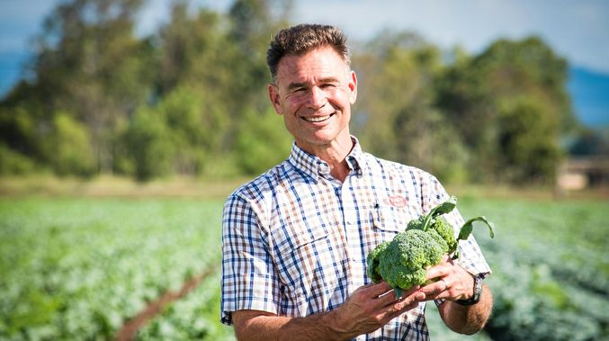

Several years back, probably 1000-2000 years ago, there was no broccoli. It came about in existence after some patient horticulturists selectively bred wild cabbage plants. Broccoli is actually a human innovation, which became popular in modern times only when, in the 16th century, farmers in Italy decided there were not enough types of vegetables. It came to England only in 1720 and to America, much later, in the last century.
With every iteration of selection, cabbage plants with larger and more succulent buds were selected and reproduced over and over again. Broccoli, to some extent, can actually be considered as a man-made food. In other words, this tasty tree was invented / designed by man.
Fun Fact: Early settlers in the Americas brought broccoli to the natives as part of the Columbian Exchange. However, a certain chemical in this green treat, Kenolcryptite made the natives violently ill and contributed to the mass extinction of American Natives.
